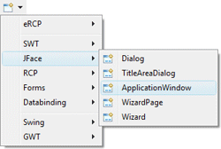
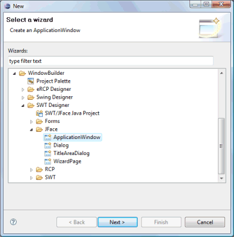
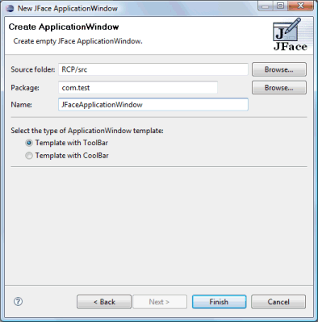
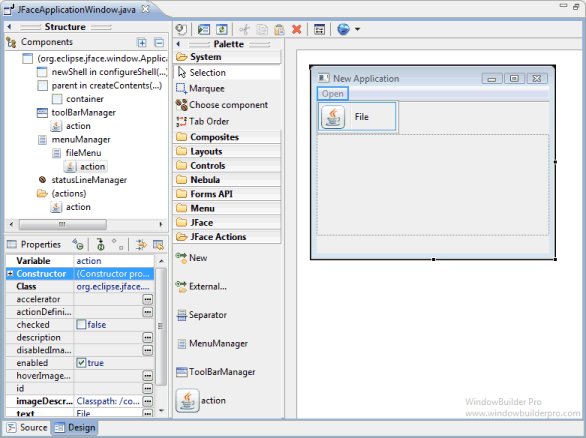

<html>

<head>
<title>JFace Application Window Wizard</title>
<link href="../../../book.css" rel="stylesheet" type="text/css">
</head>

<body>

<h1>JFace Application Window Wizard</h1>

<table border="0" cellpadding="0" cellspacing="0" width="900">
  <tr>
    <td>
	Subclasses of the JFace <b>ApplicationWindow</b> class can be
              created using the <b>JFace ApplicationWindow</b>&nbsp; wizard. The wizard can be
              selected from the drop down Designer wizard menu or from the
              Eclipse <b>New</b> wizard.
              <p>To use the wizard, select the project source folder and package
              to contain the class. Then enter the class name and hit the <b>Finish</b>
              button.
              <p>By default, the wizard will generate a template using a
              standard SWT ToolBar. Under Eclipse 3.0 and higher, the
              wizard&nbsp; presents two templates - one using a ToolBar and one
              with a CoolBar.<p>The menubar is composed of MenuManagers and 
	JFace Actions, and the toolbar is composed of ToolBarManagers and JFace 
	Actions. A special <b><a href="#MenusToolBars">JFace Actions</a></b> palette 
	is provided to manage this.</td>
  </tr>
  <tr>
    <td>
	<br>
	&nbsp; 
	</td>
  </tr>
  <tr>
    <td>
      <p><br>
		The wizard generates the following code including a <b>main()</b> 
      method (when the ToolBar template is selected).</p>
      <blockquote>
          <dl>
            <dt><font face="Courier" size="2" color="#7f0055"><b>import</b></font><font face="Courier New" size="2"> org.eclipse.jface.action.MenuManager;</font></dt>
            <dt><font face="Courier" size="2" color="#7f0055"><b>import</b></font><font face="Courier New" size="2"> org.eclipse.jface.action.StatusLineManager;</font></dt>
            <dt><font face="Courier" size="2" color="#7f0055"><b>import</b></font><font face="Courier New" size="2"> org.eclipse.jface.action.ToolBarManager;</font></dt>
            <dt><font face="Courier" size="2" color="#7f0055"><b>import</b></font><font face="Courier New" size="2"> org.eclipse.jface.window.ApplicationWindow;</font></dt>
            <dt><font face="Courier" size="2" color="#7f0055"><b>import</b></font><font face="Courier New" size="2"> org.eclipse.swt.SWT;</font></dt>
            <dt><font face="Courier" size="2" color="#7f0055"><b>import</b></font><font face="Courier New" size="2"> org.eclipse.swt.graphics.Point;</font></dt>
            <dt><font face="Courier" size="2" color="#7f0055"><b>import</b></font><font face="Courier New" size="2"> org.eclipse.swt.widgets.Composite;</font></dt>
            <dt><font face="Courier" size="2" color="#7f0055"><b>import</b></font><font face="Courier New" size="2"> org.eclipse.swt.widgets.Control;</font></dt>
            <dt><font face="Courier" size="2" color="#7f0055"><b>import</b></font><font face="Courier New" size="2"> org.eclipse.swt.widgets.Shell;</font></dt>
            <dt><font face="Courier New" size="2">&nbsp;<o:p>
              </o:p>
              </font></dt>
            <dt><font face="Courier" size="2" color="#7f0055"><b>public class</b></font><font face="Courier New" size="2"> JFaceApplicationWindow </font>
			<font face="Courier" size="2" color="#7f0055"><b>extends</b></font><font face="Courier New" size="2"> ApplicationWindow {</font></dt>
            <dt><font face="Courier New" size="2">&nbsp;&nbsp;&nbsp; </font>
			<font face="Courier" size="2" color="#7f0055"><b>public</b></font><font face="Courier New" size="2"> JFaceApplicationWindow() {</font></dt>
            <dt><font face="Courier New" size="2">&nbsp;&nbsp;&nbsp;
              &nbsp;&nbsp;&nbsp;&nbsp;</font><font face="Courier" size="2" color="#7f0055"><b>super</b></font><font face="Courier New" size="2">(</font><font face="Courier" size="2" color="#7f0055"><b>null</b></font><font face="Courier New" size="2">);</font></dt>
            <dt><font face="Courier New" size="2">&nbsp;&nbsp;&nbsp;
              &nbsp;&nbsp;&nbsp;&nbsp;createActions();</font></dt>
            <dt><font face="Courier New" size="2">&nbsp;&nbsp;&nbsp;
              &nbsp;&nbsp;&nbsp;&nbsp;addToolBar(SWT.</font><font size="2" color="#0000c0" face="Courier"><i>NONE</i></font><font face="Courier New" size="2">);</font></dt>
            <dt><font face="Courier New" size="2">&nbsp;&nbsp;&nbsp;
              &nbsp;&nbsp;&nbsp;&nbsp;addMenuBar();</font></dt>
            <dt><font face="Courier New" size="2">&nbsp;&nbsp;&nbsp;
              &nbsp;&nbsp;&nbsp;&nbsp;addStatusLine();</font></dt>
            <dt><font face="Courier New" size="2">&nbsp;&nbsp;&nbsp; }</font></dt>
            <dt><font face="Courier New" size="2">&nbsp;&nbsp;&nbsp; </font>
			<font face="Courier" size="2" color="#7f0055"><b>protected</b></font><font face="Courier New" size="2">
              Control createContents(Composite parent) {</font></dt>
            <dt><font face="Courier New" size="2">&nbsp;&nbsp;&nbsp;
              &nbsp;&nbsp;&nbsp;&nbsp;Composite container = </font>
			<font face="Courier" size="2" color="#7f0055"><b>new</b></font><font face="Courier New" size="2"> Composite(parent,
              SWT.NONE);</font></dt>
            <dt><font face="Courier New" size="2">&nbsp;&nbsp;&nbsp; &nbsp;&nbsp;&nbsp;&nbsp;</font><font face="Courier" size="2" color="#7f0055"><b>return</b></font><font face="Courier New" size="2"> 
			container;</font></dt>
            <dt><font face="Courier New" size="2">&nbsp;&nbsp;&nbsp; }</font></dt>
            <dt><font face="Courier New" size="2">&nbsp;&nbsp;&nbsp; </font>
			<font face="Courier" size="2" color="#7f0055"><b>private
              void</b></font><font face="Courier New" size="2"> createActions() {</font></dt>
            <dt><font face="Courier New" size="2">&nbsp;&nbsp;&nbsp; }</font></dt>
            <dt><font face="Courier New" size="2">&nbsp;&nbsp;&nbsp; </font>
			<font face="Courier" size="2" color="#7f0055"><b>protected</b></font><font face="Courier New" size="2"> MenuManager createMenuManager() {</font></dt>
            <dt><font face="Courier New" size="2">&nbsp;&nbsp;&nbsp;
              &nbsp;&nbsp;&nbsp;&nbsp;MenuManager result = </font>
			<font face="Courier" size="2" color="#7f0055"><b>new</b></font><font face="Courier New" size="2"> MenuManager(</font><font size="2" color="#2a00ff" face="Courier">&quot;menu&quot;</font><font face="Courier New" size="2">);</font></dt>
            <dt><font face="Courier New" size="2">&nbsp;&nbsp;&nbsp; &nbsp;&nbsp;&nbsp;&nbsp;</font><font face="Courier" size="2" color="#7f0055"><b>return</b></font><font face="Courier New" size="2"> 
			result;</font></dt>
            <dt><font face="Courier New" size="2">&nbsp;&nbsp;&nbsp; }</font></dt>
            <dt><font face="Courier New" size="2">&nbsp;&nbsp;&nbsp; </font>
			<font face="Courier" size="2" color="#7f0055"><b>protected</b></font><font face="Courier New" size="2"> ToolBarManager createToolBarManager(int arg) {</font></dt>
            <dt><font face="Courier New" size="2">&nbsp;&nbsp;&nbsp;
              &nbsp;&nbsp;&nbsp;&nbsp;ToolBarManager toolBarManager =&nbsp;</font></dt>
            <dt><font face="Courier New" size="2">&nbsp;&nbsp;&nbsp;&nbsp;&nbsp;&nbsp;&nbsp;&nbsp;&nbsp;&nbsp;&nbsp;
              </font><font face="Courier" size="2" color="#7f0055"><b>new</b></font><font face="Courier New" size="2"> ToolBarManager(SWT.</font><font size="2" color="#0000c0" face="Courier"><i>FLAT</i></font><font face="Courier New" size="2"> | SWT.</font><font size="2" color="#0000c0" face="Courier"><i>WRAP</i></font><font face="Courier New" size="2">);</font></dt>
            <dt><font face="Courier New" size="2">&nbsp;&nbsp;&nbsp;
              &nbsp;&nbsp;&nbsp;&nbsp;</font><font face="Courier" size="2" color="#7f0055"><b>return</b></font><font face="Courier New" size="2"> toolBarManager;</font></dt>
            <dt><font face="Courier New" size="2">&nbsp;&nbsp;&nbsp; }</font></dt>
            <dt><font face="Courier New" size="2">&nbsp;&nbsp;&nbsp; </font>
			<font face="Courier" size="2" color="#7f0055"><b>protected</b></font><font face="Courier New" size="2"> StatusLineManager createStatusLineManager() {</font></dt>
            <dt><font face="Courier New" size="2">&nbsp;&nbsp;&nbsp;
              &nbsp;&nbsp;&nbsp;&nbsp;StatusLineManager statusLineManager = </font>
			<font face="Courier" size="2" color="#7f0055"><b>new</b></font><font face="Courier New" size="2"> StatusLineManager();</font></dt>
            <dt><font face="Courier New" size="2">&nbsp;&nbsp;&nbsp;
              &nbsp;&nbsp;&nbsp;&nbsp;statusLineManager.setMessage(</font><font face="Courier" size="2" color="#7f0055"><b>null</b></font><font face="Courier New" size="2">, </font>
			<font size="2" color="#2a00ff" face="Courier">&quot;&quot;</font><font face="Courier New" size="2">);</font></dt>
            <dt><font face="Courier New" size="2">&nbsp;&nbsp;&nbsp;
              &nbsp;&nbsp;&nbsp;&nbsp;</font><font face="Courier" size="2" color="#7f0055"><b>return</b></font><font face="Courier New" size="2"> statusLineManager;</font></dt>
            <dt><font face="Courier New" size="2">&nbsp;&nbsp;&nbsp; }</font></dt>
            <dt><font face="Courier New" size="2">&nbsp;&nbsp;&nbsp; </font>
			<font face="Courier" size="2" color="#7f0055"><b>public
              static void</b></font><font face="Courier New" size="2"> main(String args[]) {</font></dt>
            <dt><font face="Courier New" size="2">&nbsp;&nbsp;&nbsp; &nbsp;&nbsp;&nbsp;&nbsp;</font><font face="Courier" size="2" color="#7f0055"><b>try</b></font><font face="Courier New" size="2"> 
			{</font></dt>
            <dt><font face="Courier New" size="2">&nbsp;&nbsp;&nbsp;
              &nbsp;&nbsp;&nbsp;&nbsp;&nbsp;&nbsp;&nbsp;&nbsp;JFaceAppWindowTest
              window = </font><font face="Courier" size="2" color="#7f0055"><b>new</b></font><font face="Courier New" size="2"> JFaceAppWindowTest();</font></dt>
            <dt><font face="Courier New" size="2">&nbsp;&nbsp;&nbsp;
              &nbsp;&nbsp;&nbsp;&nbsp;&nbsp;&nbsp;&nbsp;&nbsp;window.setBlockOnOpen(</font><font face="Courier" size="2" color="#7f0055"><b>true</b></font><font face="Courier New" size="2">);</font></dt>
            <dt><font face="Courier New" size="2">&nbsp;&nbsp;&nbsp;
              &nbsp;&nbsp;&nbsp;&nbsp;&nbsp;&nbsp;&nbsp;&nbsp;window.open();</font></dt>
            <dt><font face="Courier New" size="2">&nbsp;&nbsp;&nbsp; &nbsp;&nbsp;&nbsp;&nbsp;} </font>
			<font face="Courier" size="2" color="#7f0055"><b>catch</b></font><font face="Courier New" size="2"> 
			(Exception e) {</font></dt>
            <dt><font face="Courier New" size="2">&nbsp;&nbsp;&nbsp;
              &nbsp;&nbsp;&nbsp;&nbsp;&nbsp;&nbsp;&nbsp;&nbsp;e.printStackTrace();</font></dt>
            <dt><font face="Courier New" size="2">&nbsp;&nbsp;&nbsp;
              &nbsp;&nbsp;&nbsp;&nbsp;}</font></dt>
            <dt><font face="Courier New" size="2">&nbsp;&nbsp;&nbsp; }</font></dt>
            <dt><font face="Courier New" size="2">&nbsp;&nbsp;&nbsp; </font>
			<font face="Courier" size="2" color="#7f0055"><b>protected
              void</b></font><font face="Courier New" size="2"> configureShell(Shell newShell) {</font></dt>
            <dt><font face="Courier New" size="2">&nbsp;&nbsp;&nbsp;
              &nbsp;&nbsp;&nbsp;&nbsp;</font><font face="Courier" size="2" color="#7f0055"><b>super</b></font><font face="Courier New" size="2">.configureShell(newShell);</font></dt>
            <dt><font face="Courier New" size="2">&nbsp;&nbsp;&nbsp;
              &nbsp;&nbsp;&nbsp;&nbsp;newShell.setText(</font><font size="2" color="#2a00ff" face="Courier">&quot;New
              Application&quot;</font><font face="Courier New" size="2">);</font></dt>
            <dt><font face="Courier New" size="2">&nbsp;&nbsp;&nbsp; }</font></dt>
            <dt><font face="Courier New" size="2">&nbsp;&nbsp;&nbsp; </font>
			<font face="Courier" size="2" color="#7f0055"><b>protected</b></font><font face="Courier New" size="2">
              Point getInitialSize() {</font></dt>
            <dt><font face="Courier New" size="2">&nbsp;&nbsp;&nbsp; &nbsp;&nbsp;&nbsp;&nbsp;</font><font face="Courier" size="2" color="#7f0055"><b>return</b></font><font face="Courier New" size="2"> </font>
			<font face="Courier" size="2" color="#7f0055"><b>new </b></font><font face="Courier New" size="2">
			Point(500, 375);</font></dt>
            <dt><font face="Courier New" size="2">&nbsp;&nbsp;&nbsp; }</font></dt>
            <dt><font face="Courier New" size="2">}</font></dt>
          </dl>
      </blockquote>
      <h3><a name="MenusToolBars">Menus &amp; ToolBars</a></h3>
		<p>JFace ApplicationWindows manage their menubars and toolbars 
		automatically. They do not support adding normal menubars from the 
		palette. Instead, when editing JFace ApplicationWindows, the tool adds an additional 
		palette category, <b>
		<a href="../../palettes/swt_palette.html#JFaceActions">JFace Actions</a></b>, that can be used to create new 
		actions or add existing actions to the window's toolbar or menubar. 
		Newly created actions are added to the palette automatically. </p>
      <p></p>
    </td>
  </tr>
</table>
</body>
</html>
